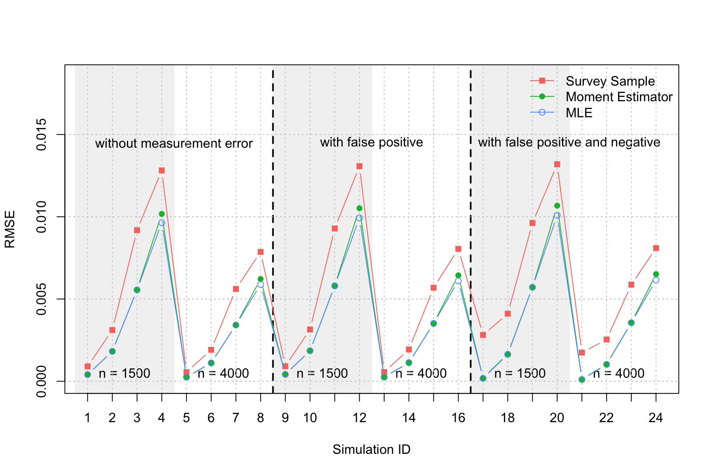

simulations.RmdIn this simulation study, we compare the performance of the three estimators considered in Guerrier, Kuzmics, and Victoria-Feser (2020), namely the sample survey, \(\bar{\pi}_2\), the MLE \(\hat{\pi}_2\) as well as the modified MLE \(\tilde{\pi}_2\). All simulation results are based on \(B = 10^3\) Monte-Carlo replications and we consider 12 simulation settings, which are presented in the table below:
# Load package
library(CPreval)
# Number of Monte-Carlo simulations
B = 1000
# Initial simulation seed
seed = 1832
# Simulation settings
simu = data.frame(Simulation = 1:12,
pi2 = 100*rep(c(1.5/100, 1.5/10, 5/10), 4),
pi1 = 100*rep(c(1/100, 1/10, 3/10), 4),
n = rep(c(rep(1500, 3), rep(4000, 3)), 2),
alpha = 100*c(rep(0, 6), rep(0.01,6)),
beta = 100*c(rep(0, 6), rep(0.04,6)))
# Print table
kable(simu, col.names = c("Simulation ID",
"$\\pi_2$ (%)",
"$\\pi_1$ (%)",
"Sample size $n$",
"$\\alpha_1 = \\alpha_2$ (%)",
"$\\beta_1 = \\beta_2$ (%)")) %>%
kable_styling(bootstrap_options = c("striped", "hover"))| Simulation ID | \(\pi_2\) (%) | \(\pi_1\) (%) | Sample size \(n\) | \(\alpha_1 = \alpha_2\) (%) | \(\beta_1 = \beta_2\) (%) |
|---|---|---|---|---|---|
| 1 | 1.5 | 1 | 1500 | 0 | 0 |
| 2 | 15.0 | 10 | 1500 | 0 | 0 |
| 3 | 50.0 | 30 | 1500 | 0 | 0 |
| 4 | 1.5 | 1 | 4000 | 0 | 0 |
| 5 | 15.0 | 10 | 4000 | 0 | 0 |
| 6 | 50.0 | 30 | 4000 | 0 | 0 |
| 7 | 1.5 | 1 | 1500 | 1 | 4 |
| 8 | 15.0 | 10 | 1500 | 1 | 4 |
| 9 | 50.0 | 30 | 1500 | 1 | 4 |
| 10 | 1.5 | 1 | 4000 | 1 | 4 |
| 11 | 15.0 | 10 | 4000 | 1 | 4 |
| 12 | 50.0 | 30 | 4000 | 1 | 4 |
The code for the simulation is given here:
# Initialisation
res_survey = res_mle = res_mod_mle = matrix(NA, B, 12)
# Start Monte-Carlo
for (j in 1:12){
for (i in 1:B){
X = sim_Rs(pi2 = simu$pi2[j]/100, pi1 = simu$pi1[j]/100, n = simu$n[j], seed = seed + i,
alpha1 = simu$alpha[j]/100, alpha2 = simu$alpha[j]/100,
beta1 = simu$beta[j]/100, beta2 = simu$beta[j]/100)
res_survey[i,j] = survey_sample(R2 = X$R2, n = X$n, alpha2 = X$alpha2, beta2 = X$beta2)$estimate - simu$pi2[j]/100
res_mod_mle[i,j] = modified_mle(R1 = X$R1, X$R2, n = X$n, pi1 = X$pi1, alpha1 = X$alpha1, alpha2 = X$alpha2, beta1 = X$beta1, beta2 = X$beta2)$estimate - simu$pi2[j]/100
res_mle[i,j] = mle(R1 = X$R1, X$R2, n = X$n, pi1 = X$pi1, alpha1 = X$alpha1, alpha2 = X$alpha2, beta1 = X$beta1, beta2 = X$beta2)$estimate - simu$pi2[j]/100
}
}In the figure below we compare the Root Mean Square Error (RMSE) for the three estimators in the 12 simulation settings.
RMSE = function(x)
sqrt(mean(x)^2 + var(x))
cols = hcl(h = seq(15, 375, length = 4), l = 65, c = 100)[1:3]
rmse_survey = apply(res_survey, 2, RMSE)
rmse_mod_mle = apply(res_mod_mle, 2, RMSE)
rmse_mle = apply(res_mle, 2, RMSE)
plot(NA, xlim = c(1,12), ylim = c(0, max(rmse_survey)))
lines(1:12, rmse_survey, col = cols[1], pch = 15, type = "b")
lines(1:12, rmse_mod_mle, col = cols[2], pch = 16, type = "b")
lines(1:12, rmse_mle, col = cols[3], pch = 17, type = "b")
Finally, the empirical distribution of the estimators is presented below:
boxplot(res_survey, res_mod_mle, res_mle, col = "lightgrey")
points(1:3, c(mean(res_survey), mean(res_mod_mle), mean(res_mle)), col = 2, pch = 16, cex = 2)
abline(h = pi2, lwd = 2, col = 2)
sqrt((mean(res_survey) - pi2)^2 + var(res_survey))
sqrt((mean(res_mod_mle) - pi2)^2 + var(res_mod_mle))
sqrt((mean(res_mle) - pi2)^2 + var(res_mle))Guerrier, Stéphane, Christoph Kuzmics, and Maria-Pia Victoria-Feser. 2020. “Accurate Prevalence Estimation for Emerging or Rare Infectious Diseases.”